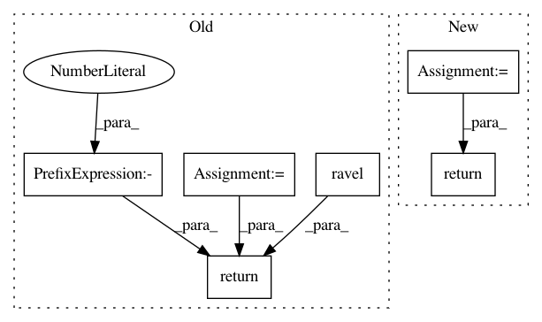

b4bfb0de9c7237c9d404d5565f6d77c21bec5b48,skimage/morphology/watershed.py,,watershed,#Any#Any#Any#Any#Any#Any#,149
Before Change
mask = np.pad(mask, pad_width, mode="constant")
markers = np.pad(markers, pad_width, mode="constant")
c_image = image.astype(np.float64)
c_mask = np.ascontiguousarray(mask, dtype=np.int8).ravel()
c_output = np.array(markers, dtype=np.int32).ravel()
flat_neighborhood = _compute_neighbors(image, c_connectivity, offset)
marker_locations = np.flatnonzero(markers).astype(np.int32)
image_strides = np.array(image.strides, dtype=np.int32) // image.itemsize
if len(marker_locations) > 0:
_watershed.watershed(c_image.ravel(),
marker_locations, flat_neighborhood,
c_mask, image_strides, compactness,
c_output)
c_output = c_output.reshape(c_image.shape)[[slice(1, -1, None)] *
image.ndim]
try:
return c_output.astype(markers.dtype)
except:
return c_output
After Change
mask, image_strides, compactness,
output.ravel())
output = crop(output, pad_width, copy=True)
return output
In pattern: SUPERPATTERN
Frequency: 3
Non-data size: 6
Instances
Project Name: scikit-image/scikit-image
Commit Name: b4bfb0de9c7237c9d404d5565f6d77c21bec5b48
Time: 2016-08-24
Author: juan.n@unimelb.edu.au
File Name: skimage/morphology/watershed.py
Class Name:
Method Name: watershed
Project Name: suragnair/alpha-zero-general
Commit Name: ca1f2c5479000ced7b8f785a27f446be3ed4a46f
Time: 2019-05-27
Author: threedliteguy@users.noreply.github.com
File Name: tafl/TaflGame.py
Class Name: TaflGame
Method Name: getSymmetries
Project Name: yzhao062/pyod
Commit Name: fbdbf4de743519da4c794c9f87467b903f5194a6
Time: 2018-09-03
Author: yuezhao@cs.toronto.edu
File Name: pyod/models/auto_encoder.py
Class Name: AutoEncoder
Method Name: decision_function